2026-06-29 · 데스크톱 1440px 기준 섹션별 캡처. 각 섹션의 현재 상태 · 발견된 문제 · 수정 방안을 정리했습니다. 세부 To-Do 체크리스트는 improvements-todo.md 참고.
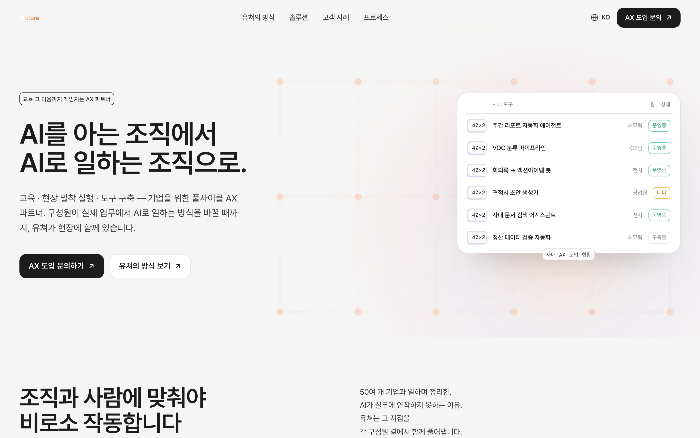
"AI를 아는 조직 → AI로 일하는 조직" 카피 + 앰비언트 그리드 + "사내 도구 운영현황" 카드. 무엇을 하는 회사인지 첫 화면에서 명확.
① 1040px 미만에서 카드가 숨겨져 태블릿 구간 우측이 빔 ② 배경 글로우(aura)와 모션 그리드가 겹쳐 약간 탁함.
카드 헤더 줄바꿈 정렬 완료 ✅. 태블릿 구간 우측 비주얼 보강(축소 카드/그리드), 배경 글로우 하나로 정리.
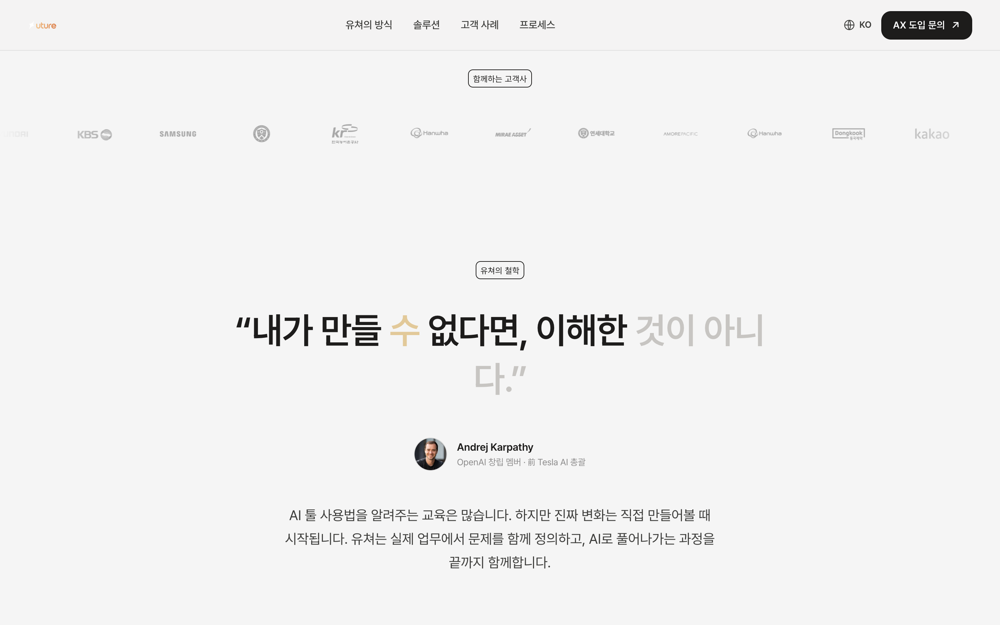
실제 고객사 로고(한화·kakao·NC·SK·이마트 등) grayscale 마퀴.
직전까지 CSS 버그로 로고가 전혀 안 보였음. 로고별 원본 여백 차이로 체감 크기가 들쭉날쭉.
높이 고정으로 노출 복구 완료 ✅. 로고별 여백/스케일 정규화로 시각 크기 균일화.
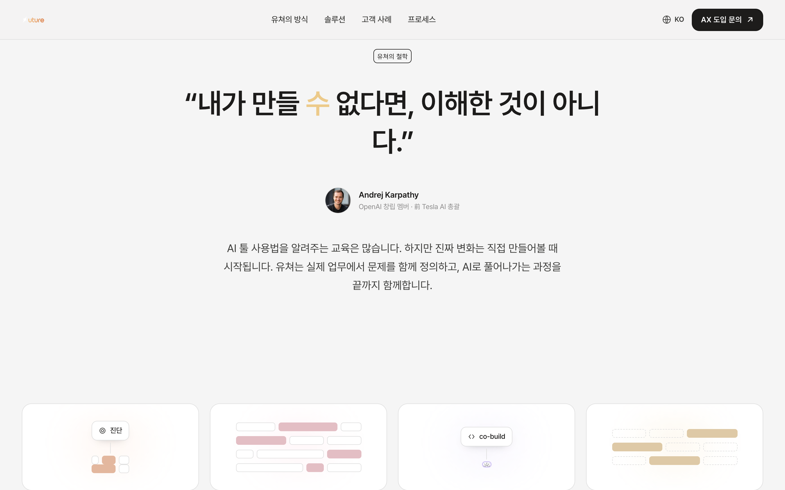
"내가 만들 수 없다면, 이해한 것이 아니다"(카파시) + 유쳐 철학 설명.
외부 권위 인용이 상단에 크게 — 기업 담당자에겐 "유쳐의 실제 성과"가 더 설득적. 하단 고객 인용(#10)과 형식이 거의 동일해 중복 인상.
카파시 인용은 보조로 축소하거나, 고객 직접 성과를 더 부각. 두 인용 블록의 스타일·스케일 차별화.
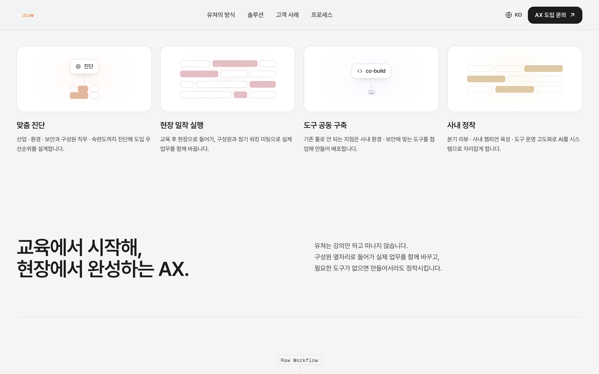
맞춤 진단 / 현장 밀착 실행 / 도구 공동 구축 / 사내 정착 4카드 + 스팟그래픽.
스팟그래픽이 추상적(핑크·피치 바)이라 각 단계의 의미 전달이 약하고 카드 간 차별성이 낮음.
단계 의미에 맞는 아이콘/그래픽으로 구체화(진단=체크리스트, 실행=워킹미팅, 구축=도구, 정착=반복 운영).
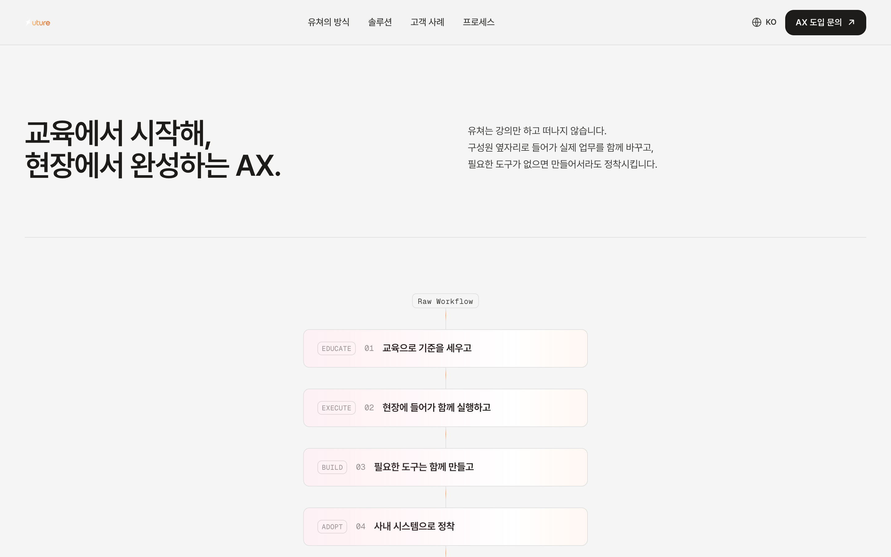
"교육에서 시작해, 현장에서 완성하는 AX." 선언 + 보조 설명.
특이사항 적음. 전반적으로 양호.
—
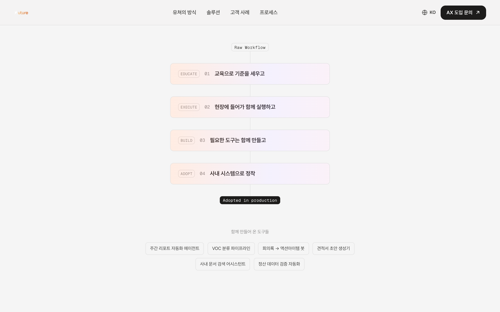
Raw Workflow → EDUCATE·EXECUTE·BUILD·ADOPT → Adopted in production → 함께 만든 도구 칩.
영문 라벨(EDUCATE 등)·"Raw Workflow"·"Adopted in production"이 한국어 사이트에 혼용 — 기업 담당자 대상 톤 일관성↓.
한글화(예: "수작업 흐름 → 교육 → 실행 → 구축 → 현장 정착") 또는 한글+영문 보조 표기.
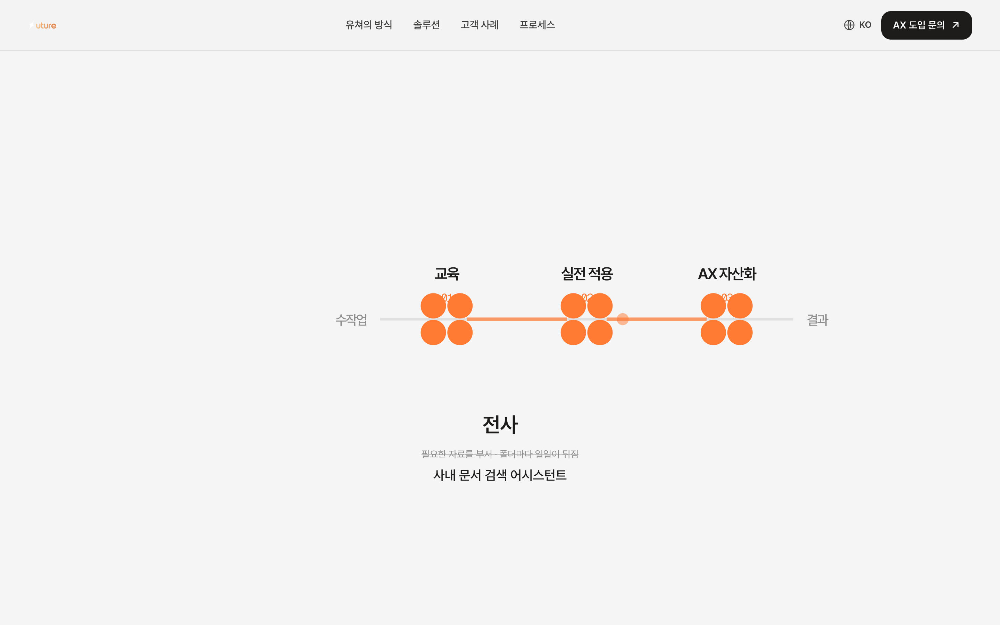
3blue1brown식 스크롤 모션 — 흩어진 수작업이 "교육 → 실전 적용 → AX 자산화"로 재편. 6개 분야 순환(전사·CS·영업·재무·마케팅·인사).
단계번호(01/02/03)가 노드 클러스터 상단과 겹쳐 어수선. 핀드 스크롤 길이가 5,689px(6분야)로 길어 스크롤 피로.
단계번호 위치 정리(라벨 위/아래 정렬), 4분야로 축소하거나 핀 길이 단축.
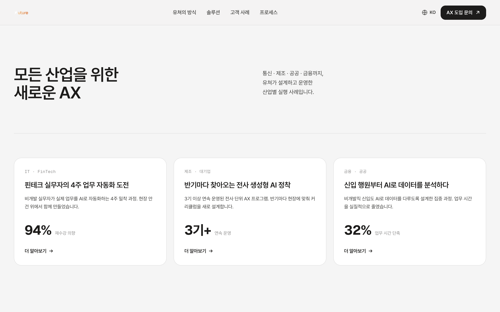
핀테크 4주 도전(94% 재수강)·제조 전사(3기+)·금융 신입(32% 단축) 3 사례 카드.
"더 알아보기" 링크가 모두 #contact(개별 사례 페이지 없음) → 기대 불일치. 통계 수치의 기간·대상 맥락 부족.
"10주"→"4주" 일관화 완료 ✅. 링크를 "진단 신청"으로 명확화 또는 사례 상세 연결, 수치에 맥락 한 줄 추가.
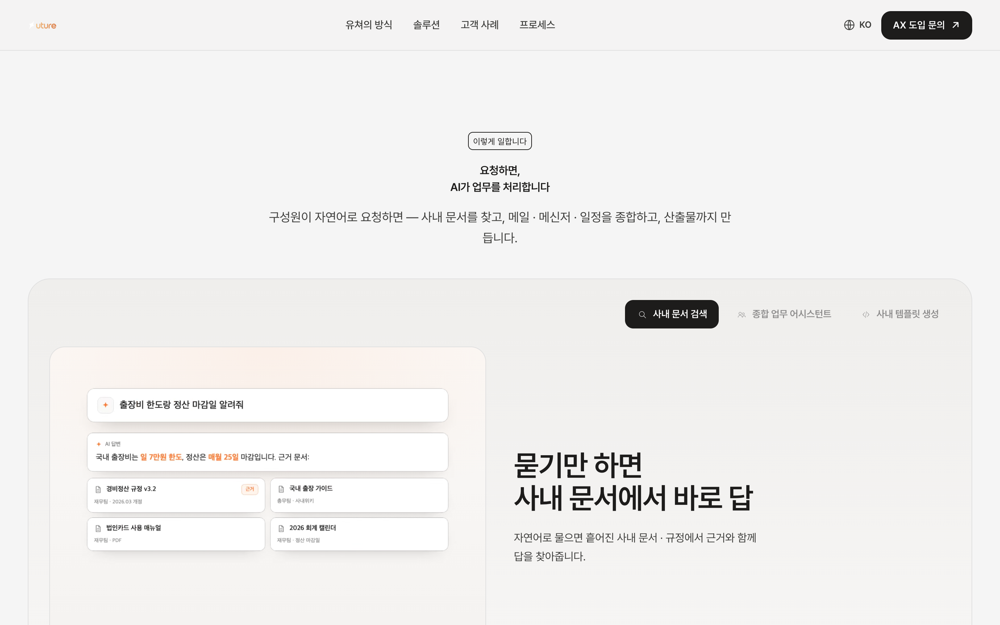
탭 3개(사내 문서 검색 / 종합 업무 어시스턴트 / 사내 템플릿 생성). 탭마다 "요청 → 결과" 데모 영상 재생.
모바일(375)에서 영상이 축소돼 카드 텍스트가 작음. 탭 라벨이 3줄로 줄바꿈.
섹션 헤딩 추가 완료 ✅. 모바일 전용 크롭/확대 또는 정적 캡처 대체, poster 이미지로 초기 프레임 표시.
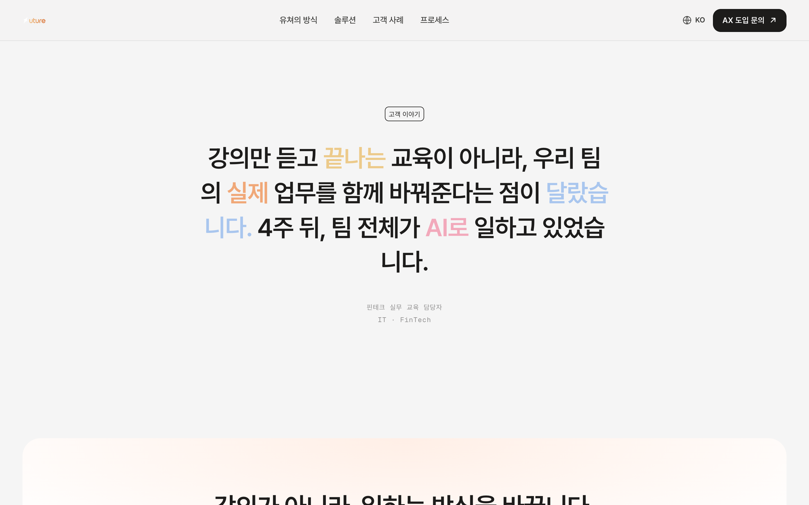
"강의만 듣고 끝나는 교육이 아니라… 4주 뒤, 팀 전체가 AI로 일하고 있었습니다."(핀테크 담당자)
#03 카파시 인용과 형식(대형 멀티컬러 인용)이 거의 동일 → 중복 인상.
"10주"→"4주" 완료 ✅. 둘 중 하나의 레이아웃/스케일 차별화(예: 이건 고객사 로고·이름 카드형).
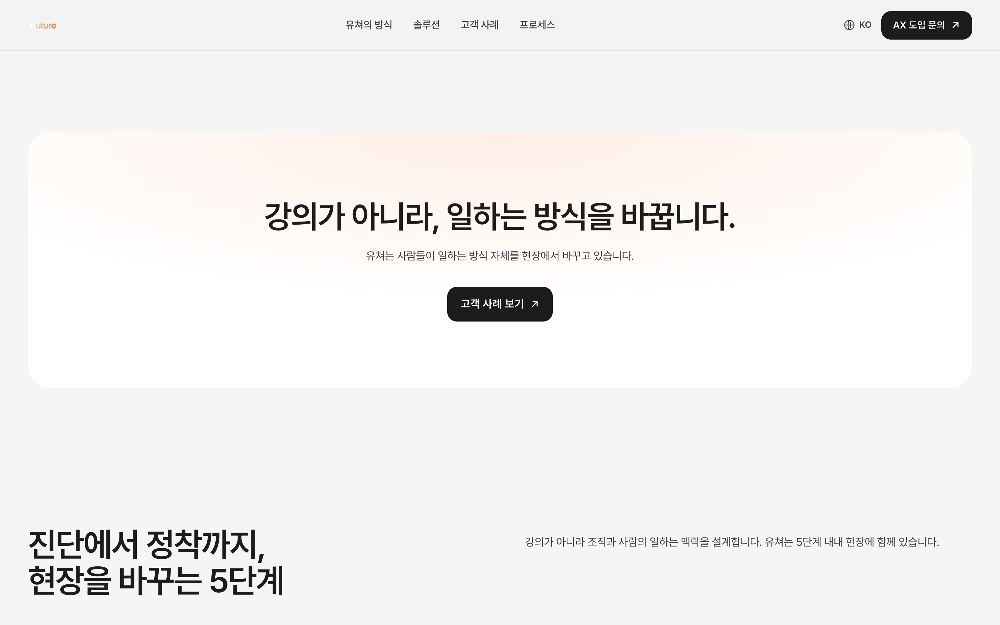
"강의가 아니라, 일하는 방식을 바꿉니다." + "고객 사례 보기".
하단 Philosophy(#14)·FinalCTA(#15)와 매니페스토 톤이 유사해 역할이 겹침.
문구·CTA 차별화 완료 ✅. 세 블록 역할 분리: GlowCTA=전환, Philosophy=신뢰/약속, FinalCTA=행동.
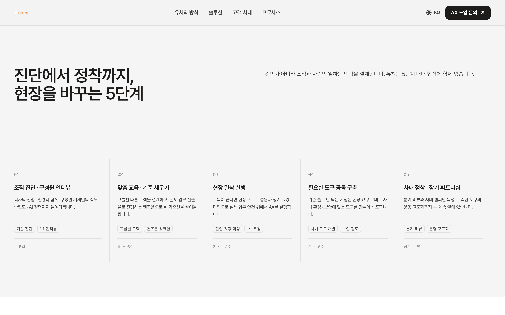
진단 → 교육 → 현장 실행 → 도구 구축 → 정착, 단계별 기간(~5일/4~6주/8~12주/2~6주/장기).
특이사항 적음.
제목 "진단에서 정착까지" 차별화 완료 ✅. 단계 번호 스타일 통일 정도(P3).
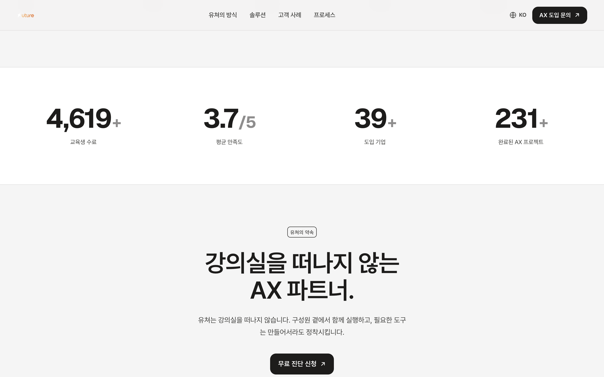
6,000+ 교육생 · 4.8/5 만족도 · 50+ 도입 기업 · 300+ 완료 프로젝트.
강력한 수치이나 기준/출처가 없어 신뢰의 근거가 약함.
각 수치에 작은 기준 라벨(기간·집계 기준) 추가. 스크롤 시 카운트업 모션 유지/강화.
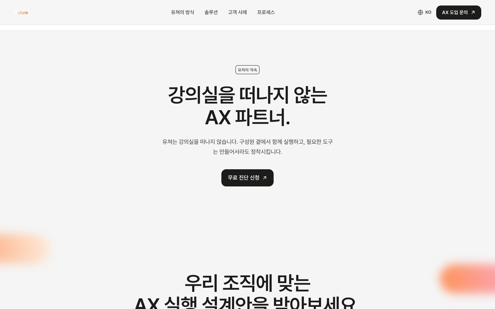
"강의실을 떠나지 않는 AX 파트너." + "무료 진단 신청".
GlowCTA(#11)와 기능·톤이 유사.
제목·CTA 차별화 완료 ✅. 신뢰/약속 각도로 역할 고정(예: 보장·운영 책임 메시지).
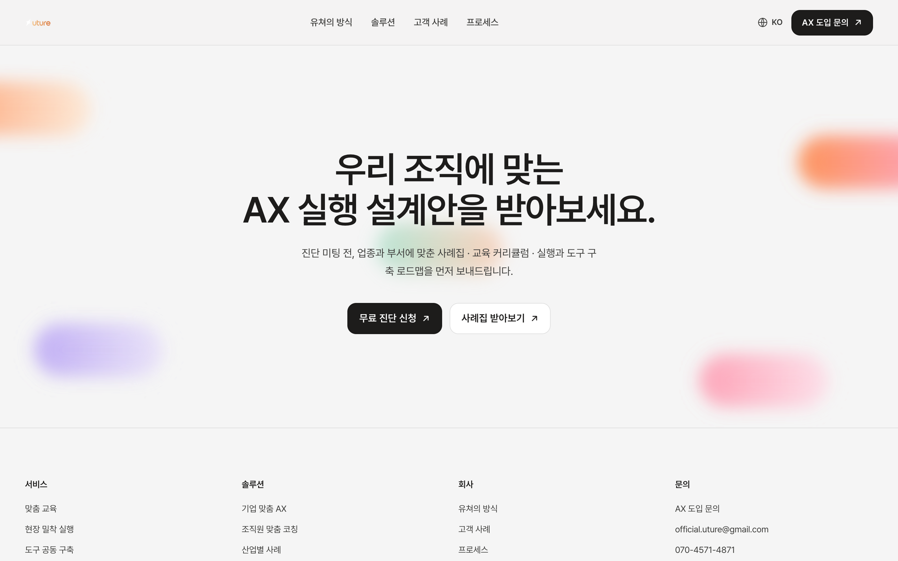
"우리 조직에 맞는 AX 실행 설계안을 받아보세요." + 무료 진단/사례집 + 4컬럼 풋터.
풋터 "이용약관·개인정보처리방침" 링크가 빈 값(#). "디자인 시스템" 내부 링크 노출.
빈 링크 실제 연결 또는 임시 처리, 내부용 링크 정리.